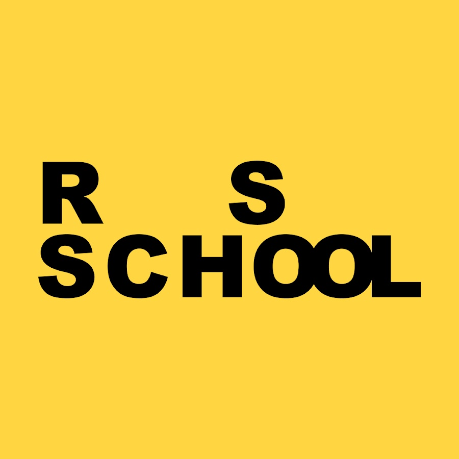

About me
Hello, my name is Vadim. I work at a motor plant as a design engineer and I'm currently attended the RSS front-end course. Also in the near future, I want to start learning English. I started to learn front-end at the end of February using videos on YouTube. I watched videos of various bloggers about web development, marathons on site layout, training videos. In addition, haven't learned about the course from the RSS I mastered all the information recommended for starting before starting the course. I was very interested in it. I like to get new knowledge and work it out in practice. If the topic is very interesting I can work on it for hours. In this course, I want to get a lot of information, complete various difficult tasks, gate the experience, and create a portfolio in the future, try to work in a team. I tried to devote as much free time as possible to train and I hope that this will help me in acquiring the skills necessary for a front-end developer. My nearest plans in this area are learning HTML, CSS, Node.js. Then I want to work as a front-end developer. I really like codewars tasks, the rest of the tasks are also interesting for me. Creating the first web-page in the animal shelter task seemed difficult at first, but after that, the rest of the tasks are easier. My favorite task is the Virtual keyboard. I had spent a lot of time for figure it out.
Skills
-

HTML
-

CSS
-

JS
-

Git
-

Figma
Code
document.onkeydown = function(event) {
document.querySelector('.container .kb_key[data = "'+event.code+'"]').classList.add('active');
};
document.onkeyup = function(event) {
document.querySelector('.container .kb_key[data = "'+event.code+'"]').classList.remove('active');
};
document.querySelectorAll('.container .kb_key').forEach(function(element) {
element.onclick = function (element){
document.querySelectorAll('.container .kb_key').forEach(function(element) {
element.classList.remove('active');
});
this.classList.add('active');
setTimeout( () => {
this.classList.remove('active')
}, 100)
}
});
Education

Belarusian National Technical University (2011-2016)
- 
The Rolling Scopes School (2022-u.n.)
Contacts
-
Phone: +375 (33) 353-76-21
-
e-mail: sidvadim-1993@mail.ru
-
GitHub: vadim-sid1993
-
Discord: vadim-sid(vadim-sid1993)#3226